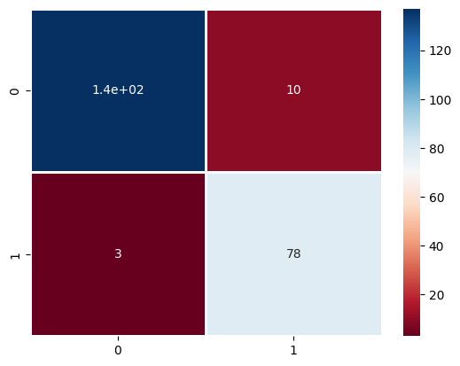
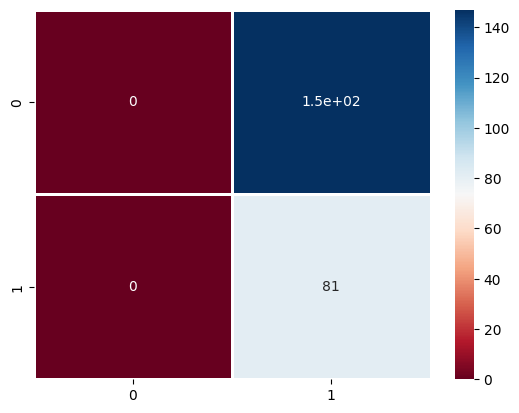

import numpy as np
import pandas as pd
import matplotlib.pyplot as plt
import seaborn as sns
from sklearn import datasets
from sklearn.model_selection import train_test_split
from sklearn.preprocessing import StandardScaler
from sklearn.preprocessing import LabelEncoder
from sklearn.metrics import classification_report
from sklearn.metrics import confusion_matrix
import warnings
warnings.filterwarnings('ignore')1) here i imported libraries that will be used in this assignment.
data = pd.read_csv("BreastCancer.csv")
data.shape(569, 32)2) loading the dataset and checked it's rows and columns.
X , y = data.iloc[:,2:32], data["diagnosis"]
X_train, X_test, y_train, y_test = train_test_split(X, y, test_size=0.4, random_state = 28)3) here i seprated the dataset into it's features and labels into X and y respectively. then just performing the train_test_split on X and y.
encoder = LabelEncoder()
y_train_encoded = encoder.fit_transform(y_train)
y_test_encoded = encoder.fit_transform(y_test)4) here just encoding the orignal labels that were ['B','M'] into [0,1]
scaler = StandardScaler().fit(X_train)
X_train_scaled = scaler.transform(X_train)
scaler = StandardScaler().fit(X_test)
X_test_scaled = scaler.transform(X_test)5) using standardization on X_train and X_test.
def sigmoid(x):
return 1/(1+np.exp(-x))
class LogisticRegression():
def __init__(self, lr=0.001, n_iters=1000):
self.lr = lr
self.n_iters = n_iters
self.weights = None
self.bias = None
def fit(self, X, y):
n_samples, n_features = X.shape
self.weights = np.zeros(n_features)
self.bias = 0
for _ in range(self.n_iters):
linear_pred = np.dot(X, self.weights) + self.bias
predictions = sigmoid(linear_pred)
dw = (1/n_samples) * np.dot(X.T, (predictions - y))
db = (1/n_samples) * np.sum(predictions-y)
self.weights = self.weights - self.lr*dw
self.bias = self.bias - self.lr*db
def predict(self, X):
linear_pred = np.dot(X, self.weights) + self.bias
y_pred = sigmoid(linear_pred)
class_pred = [0 if y<=0.5 else 1 for y in y_pred]
return class_pred6) builing a logistic regression model.
clf = LogisticRegression(lr=0.01)
clf.fit(X_train_scaled,y_train_encoded)
y_pred = clf.predict(X_test_scaled)
acc = np.sum(y_pred==y_test_encoded)/len(y_test_encoded)
print(acc*100,"%")94.2982456140351 %
7) appling that logistic regression on scaled data and checking the accuracy.
print(classification_report(y_test_encoded,y_pred)) precision recall f1-score support
0 0.98 0.93 0.95 147
1 0.89 0.96 0.92 81
accuracy 0.94 228
macro avg 0.93 0.95 0.94 228
weighted avg 0.95 0.94 0.94 228
8) here is the classification report of scaled data.
preprocessed_data = confusion_matrix (y_test_encoded, y_pred)
sns.heatmap(preprocessed_data,annot=True, cmap='RdBu', linewidths=.9)<Axes: >
9) simply using a confussion matrix and then applying heatmap to see the accuracy of logistic regression model on scaled data.
clf2 = LogisticRegression(lr=0.01)
clf2.fit(X_train,y_train_encoded)
y_pred2= clf.predict(X_test)
acc2= np.sum(y_pred2==y_test_encoded)/len(y_test_encoded)
print(acc2*100,"%")35.526315789473685 %
10) now applying the logistic regression on orignal unscaled data and seeing it's accuracy.
print(classification_report(y_test_encoded,y_pred2)) precision recall f1-score support
0 0.00 0.00 0.00 147
1 0.36 1.00 0.52 81
accuracy 0.36 228
macro avg 0.18 0.50 0.26 228
weighted avg 0.13 0.36 0.19 228
11) getting the classfication report on unscaled data.
normal_data = confusion_matrix (y_test_encoded, y_pred2)
sns.heatmap(normal_data,annot=True, cmap='RdBu', linewidths=.9)<Axes: >
12) using a confussion matrix and then applying heatmap to see the accuracy of logistic regression model on unscaled data.
print("accuracy on scaled data = ",acc*100,"%")
print("accuracy on unscaled/orignal data = ",acc2*100,"%")accuracy on scaled data = 94.2982456140351 %
accuracy on unscaled/orignal data = 35.526315789473685 %
13) here you can see that the accuracy of the logistic regression model is very high "94%" on the preprocessed scaled data. on the other hand the accuracy of unscaled data is very low "36%". the difference in accuracy is about "58%"